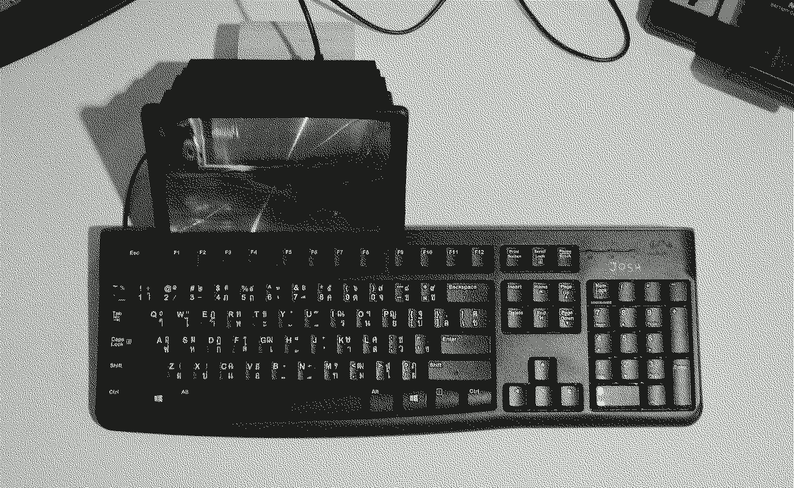

Natalie is a computer console built with a Raspberry Pi 3 Model A+ and a PiTFT Plus 480x3280 3.5" touchscreen display.
I currently use Natalie as a portable school computer as it is more convenient to tote around compared to a laptop.
| 4 Dec 2018–11 Dec 2018 | 13 logs | 3.72 h |
| Maintenance | 2.06 h | |
| Physical | 0.93 h | |
| Visual | 0.73 h |